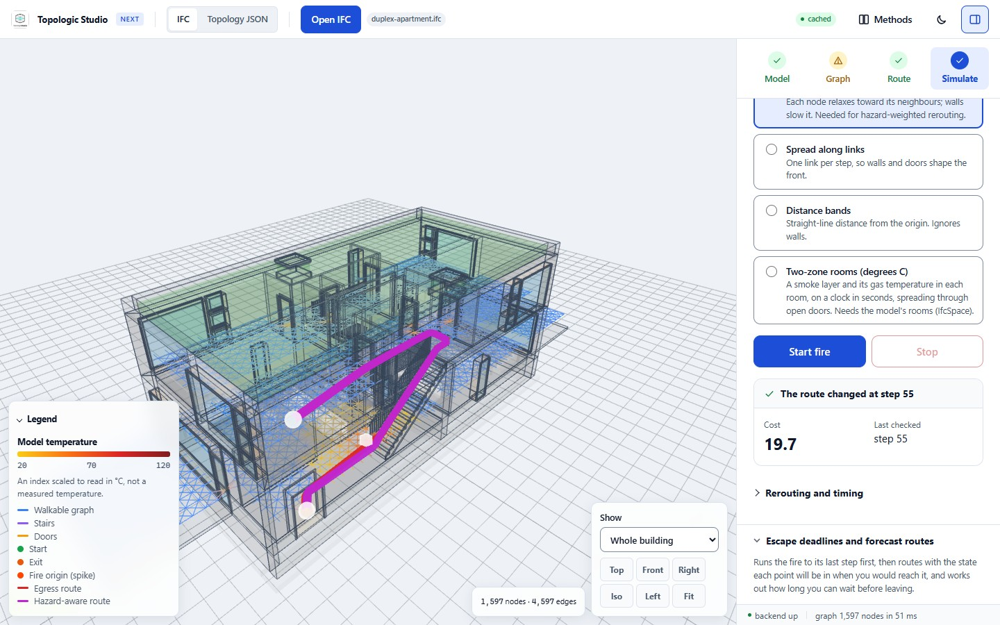
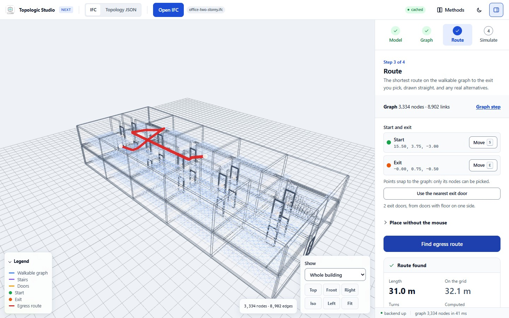
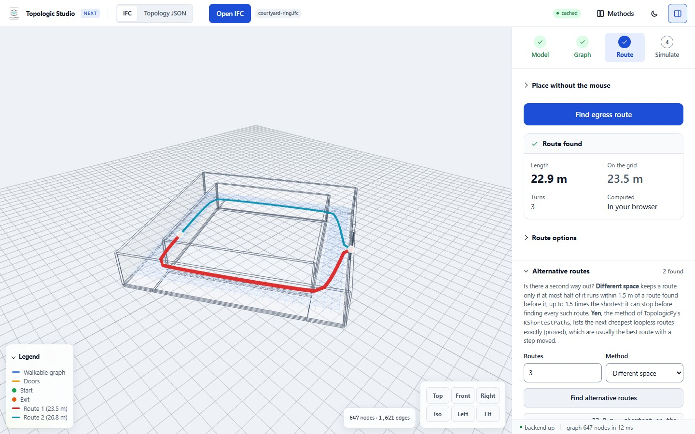
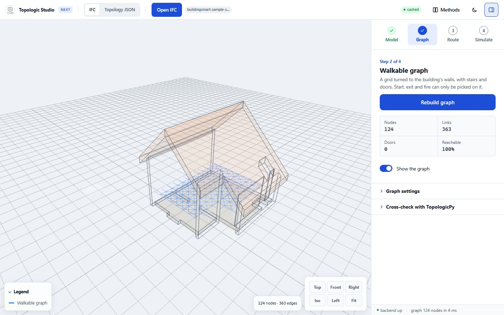

Topologic Studio
Topologic Studio opens a building model in the browser and works out how people get out of it. It reads an IFC file, turns its floors, stairs and doors into a walkable graph, finds the shortest way to an exit, and shows how a spreading fire and its smoke change that route and what sprinklers do to the fire.
There is nothing to install. Open the app, then open your own IFC file or tap one of the seven example buildings.

Studio is a research tool. Its fire models give an index of heat, not a calibrated temperature, so its results do not replace a fire engineer's egress assessment.
What it does
The panel on the right of the app walks through four steps. Each step opens with its one main button and puts the result right under it.
- Model. Studio reads IFC2x3 and IFC4 files, counts the floors, stairs, doors, walls, storeys and rooms, and finds the exit doors from the file's own data.
- Graph. A grid of points 0.5 m apart, lined up with the walls, joined where a person could walk, through doors and along stairs.
- Route. The shortest way out, straightened as a person would walk it, with alternative routes, the code check and the performance check.
- Simulate. A fire on the graph or in a 3D combustion solver, its smoke and gases, sprinklers and extinguishers, a forecast of when each place becomes untenable, and a learned escape.
Three things hold throughout:
- On your device. Opening, routing, alternative routes, fire spread, forecasts and reinforcement learning all run in the browser. The IFC file is sent to the server only if you ask for the TopologicPy cross-check.
- On a phone. The examples open in about a second on an emulated mid-range phone, and the whole workflow fits a phone screen.
- With its assumptions. Every result comes with its assumptions, the app's Methods page lists what has been proved in Lean 4, and the app tells you when a model cannot give an answer (for example two dwellings that no route joins).
The guide
-
Getting started
A quick start, then the Model, Graph and Route steps, your own IFC files, phones, export to TopologicPy and shortcuts.
-
Fire and smoke
The six fire models, the Flamescapes solver, smoke and tenability, doors, fire classes, the forecast and the learned escape.
-
Fire suppression
Sprinklers from the IFC or laid out by NFPA 13, when they open, what the water does by fire class, validation, and extinguishers.
-
Code and performance checks
The prescriptive egress check against SBC 801-CR-2018 and IBC 2021, and the performance check with the fire.
-
People leaving and the slime mould
The egress animation, everyone walking out by every exit, and the slime mould's trail over the floor with its desire lines, bottlenecks and dead ends.
-
Methods, proofs and sources
How Studio works, what is tested and proved in Lean 4, the limits, the sources, and the credits and licences.
The example buildings
The examples are converted when the site is built, so they open from a small pre-converted file (81 KB for the Duplex, 862 KB for the 13.5 MB Vienna building) without the IFC reader starting at all.
| Example | What it shows | Source and licence |
|---|---|---|
| Duplex apartment (2.3 MB) | Two mirror-image homes over two storeys, each with its own stair and front door. Exit doors, rooms and stairs all come from the file. | Common Building Information Model Files, NIBS buildingSMART alliance and U.S. Army ERDC, 2011 (wbdg.org). No licence stated; shown with credit. |
| Vienna apartment building, TU Wien (13.5 MB) | A real building in Vienna on seven levels, modelled from an approved permit project to test escape-route checks: 111 rooms, 81 doors (32 flagged as fire exits, most of them flat doors), one stairwell of four flights, and two ramps. Two doors lead out: the street door and a fire exit at the back of the first floor. | Fischer, S., Schranz, C., Urban, H., Pfeiffer, D., Flamm, L. (2024). Real-World Test Model for Escape Route Analysis in IFC format (2.0.0). TU Wien. doi:10.48436/wzp90-dmf60. CC BY 4.0; the file is unchanged. |
| Office building, NIBS (4.1 MB) | A two-storey office with 99 rooms: open offices, conference rooms, and server, telecom, electrical and UPS rooms. A model for sprinklers, extinguishers and the performance check. | Office Building, Common Building Information Model Files, NIBS buildingSMART alliance and U.S. Army ERDC, 2011 (NBU_OfficeBuilding_Arch; wbdg.org). The publisher states no licence (the DURAARK repository at TIB, which holds the same file, lists CC0); shown with credit, removed on request. |
| Medical clinic, NIBS (13.0 MB) | A two-storey medical and dental clinic with 269 spaces: waiting areas, exam and dental rooms, communication and electrical rooms, a computer room and plant. Its graph is large (about 34,000 nodes) and takes a few seconds to build. | BSI (2020) "Medical-Dental Test Files", buildingSMART International (Community Sample Test Files), from the NIBS Common BIM Files Clinic (2011). CC BY 4.0. |
| buildingSMART sample scene (224 KB) | buildingSMART's small IFC4 test building: three slabs, four walls, two spaces. | "ifc silly sample scene", buildingSMART International, Sample-Test-Files. No licence file; shown with credit. |
| Office, two storeys (179 KB) | A corridor with ten rooms per floor, a stair and an exit at each end. | Generated for Topologic Studio by tools/make_example_ifcs.py. CC0-1.0. |
| Courtyard ring (17 KB) | A corridor round a closed core with one exit, so every start has two ways out. Turned 30 degrees to test wall alignment. | Generated for Topologic Studio by tools/make_example_ifcs.py. CC0-1.0. |



Where it runs
Everything a first visit needs runs in the browser: opening and caching IFC files, the walkable graph, routes, the fire models and the optional Flamescapes solver (on the GPU through WebGPU where the browser offers it, else on one CPU core), sprinklers, extinguishers, the checks, the forecast and the learned escape.
An optional server, a FastAPI service around TopologicPy, adds TopologicPy's TGraph route engine and its k-shortest routes, a navigation cross-check (the IFC file is uploaded for this) and a viewer for TopologicPy's Topology JSON. On its free plan it sleeps after about 15 idle minutes, and the first request after that takes 30 to 50 s; everything in the browser keeps working while it wakes, or if it is never reached. How it works has the detail.